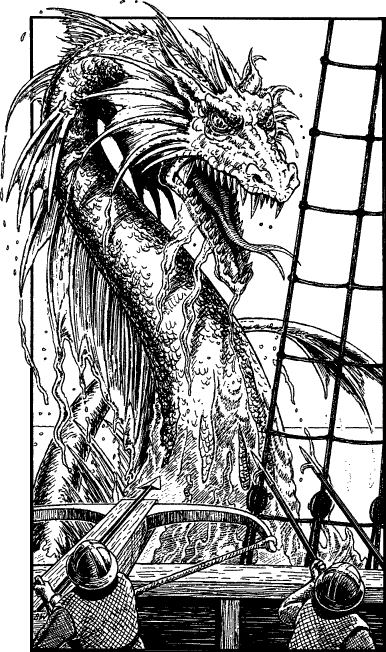

60
From the crow’s nest there comes a scream of abject horror. It echoes down the rigging, alerting all to a great scaly head that has broken through the surface twenty yards off the port bow. ‘Xargath!’ The lookout’s cry is taken up by the crew as, one by one, they glimpse the fearful sight of this legendary terror of the Kaltersee.
‘Ishir preserve us!’ gasps Captain Borse, as the beast opens its jaws revealing the glitter of its jagged, razor-sharp fangs. For a moment he is stunned by the terrifying sight, but quickly he recovers and begins shouting urgent orders to his awestruck crew. ‘Man the ballistas! Break out the billhooks! All hands stand by to defend the ship!’

The Xargath observes the commotion in silence, its hooded eyes aglow with baleful green fire as calmly it considers the moment to attack. Then, with an awful suddenness, it rises from the sea, roaring and hissing angrily, and lunges forward. Captain Borse gives the order to fire and a volley of ballista bolts sink into the monster’s scaly throat. Undeterred, it presses its attack and falls upon the port beam with devastating effect. Tortured timbers bend and crack asunder. In seconds the deck is torn apart by huge claws, each as long as a mammoth’s tusk. Then the cavernous, fang-filled mouth sweeps down through the fog to snap shut upon the forecastle. Screams of pain and terror fill the air as it withdraws, soaring upward above the masts, jaws bulging with a dozen wriggling bodies. You take cover behind the ship’s longboat with the captain and prepare to defend yourself as the Xargath returns for a second strike.
If you have a Bow and wish to use it, turn to 270.
If you possess the Sommerswerd and wish to use it, turn to 192.
If you choose to unsheathe a hand weapon, turn to 344.